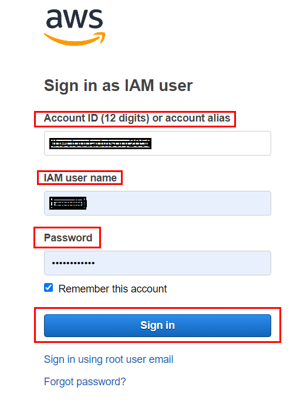
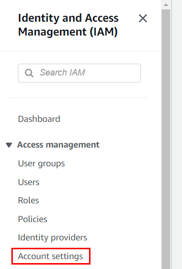
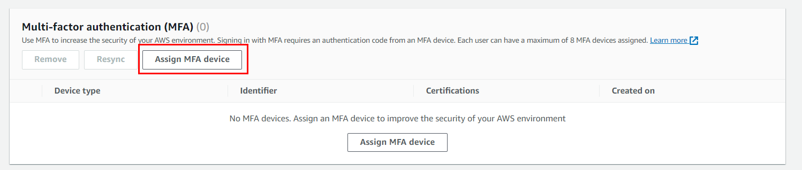
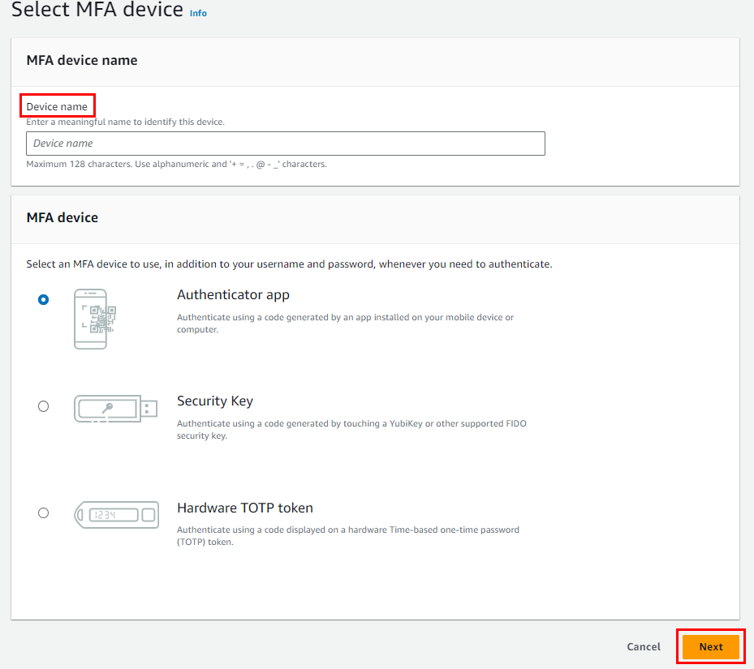

Secure Your AWS Account
Introduction
Welcome to Chapter 3 of our "Mastering AWS DevOps" series. In this blog post, we will guide you through securing your AWS account, a crucial step to protect your cloud resources from unauthorized access and potential threats.
In this blog, you will learn:
- The importance of strong passwords and how to create them.
- How to enable Multi-Factor Authentication (MFA) for an extra layer of security.
- Steps to configure a virtual MFA device.
You can watch this in the video below:
Step-by-Step Guide
1. Protecting Your AWS Account
Your AWS account is like the gateway to your cloud resources. A strong password acts as the first line of defense against unauthorized access.
2. Safeguarding Sensitive Data
Within your AWS account, you might have valuable and sensitive data. A strong password ensures that only authorized individuals can access this data.
3. Preventing Unauthorized Activities
A strong password makes it challenging for malicious actors to perform unauthorized activities, protecting your AWS resources from potential threats.
4. Reducing the Risk of Data Breaches
Data breaches can be costly and damaging. Strong passwords significantly reduce the risk of such breaches, giving you peace of mind.
So, strong passwords are your first line of defense against cyber threats and attacks. They ensure that only authorized individuals have access to your AWS account and data. A strong password for your AWS account will safeguard all your cloud resources and information, maintaining the highest level of security.
Hands On
Let's see how we can provide strong passwords and enable Multi-Factor Authentication (MFA) for your AWS account.
Creating a Strong Password
- At least 12 characters long
- Mix of upper and lower case letters
- Includes numbers and special characters
Example: P@ssw0rd123!
Enabling Multi-Factor Authentication (MFA)
Multi-Factor Authentication (MFA) adds an extra layer of protection by requiring a second form of authentication in addition to your password. Here's how to set it up:
Step 1: Sign in to the AWS Management Console
Step 2: Navigate to the IAM Dashboard
Step 3: Select Your Account Name
Step 4: Choose 'Security Credentials'
Step 5: Click 'Activate MFA'
Step 6: Configure MFA Device
Follow the on-screen instructions to configure your virtual MFA device. You can use apps like Google Authenticator or Authy for this purpose.
Step 7: Scan QR Code
Scan the provided QR code using your MFA app and enter the generated code to complete the setup.
Step 8: Verify the Code
Enter the code generated by your MFA app to verify and complete the setup.
Congratulations! You've successfully configured and enabled a virtual MFA device for your AWS root user.
Conclusion
Remember to keep your MFA device secure and make a backup of the QR code or secret key in case you need to replace the device.
As we come to the end of our journey through securing your AWS account, remember this: your AWS account isn’t just a dashboard; it’s your business’s stronghold. Just as you lock your doors at night to protect your home, securing your AWS account is your digital lock against potential threats.
By understanding the importance of strong passwords, Multi-Factor Authentication (MFA), and the layers of security AWS offers, you’ve armed yourself with the knowledge to navigate the digital landscape safely. Each step you take to secure your account brings you closer to a more resilient, confident, and future-ready business.
So, as you manage your data, run applications, and build your digital empire, remember the lessons learned here. It’s not just about locking down access; it’s about creating a digital sanctuary where your ideas, innovations, and aspirations can thrive without fear.
Thank you for joining us on this security journey. May your AWS account remain fortified, your data safeguarded, and your business’s future secure.
Share this post: